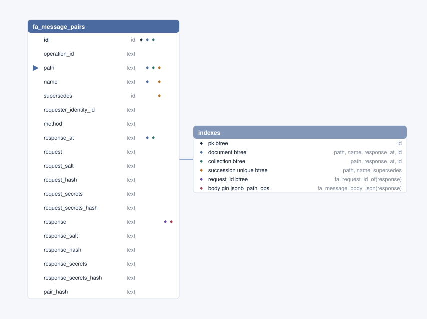

The single-table Postgres backend
"The table is named once, here, and anchored to TABLE_NAMES in api/db.ts (length 1). The name is fa_message_pairs." The only other table is schema_marker (SCHEMA.md).
A pair is the request as received, or nothing, plus the response wire bytes… A document ispathplusname:pathname = path + name… The ledger stores writes only — no GET rows.

api/db.ts, api/types.ts, and api/schema-postgres.ts, and ./test validate fails on drift.The DDL: api/schema-postgres.ts
CREATE TABLE IF NOT EXISTS fa_message_pairs (
id uuid PRIMARY KEY,
operation_id uuid NOT NULL,
path text COLLATE "C" NOT NULL
CONSTRAINT fa_message_pairs_path_chk
CHECK (left(path, 1) = '/'
AND right(path, 1) = '/'),
name text COLLATE "C" NOT NULL,
supersedes uuid NOT NULL,
requester_identity_id text COLLATE "C" NOT NULL,
method text COLLATE "C" NOT NULL ... CHECK (method ~ '^[A-Z]+$'),
response_at timestamptz NOT NULL,
request bytea NOT NULL,
request_salt bytea NOT NULL ... (octet_length(request_salt) = 16),
request_hash bytea NOT NULL ... = 32,
request_secrets bytea NOT NULL,
request_secrets_hash bytea NOT NULL,
response bytea NOT NULL,
response_salt / response_hash / response_secrets / response_secrets_hash,
pair_hash bytea NOT NULL ... = 32
);Abridged. The source spells out every CHECK constraint.
Indexes
CREATE INDEX IF NOT EXISTS fa_message_pairs_document
ON fa_message_pairs (path, name, response_at, id);
CREATE INDEX IF NOT EXISTS fa_message_pairs_collection
ON fa_message_pairs (path, response_at, id);
CREATE UNIQUE INDEX IF NOT EXISTS fa_message_pairs_succession
ON fa_message_pairs (path, name, supersedes)
WHERE method IN ('PUT', 'DELETE');
CREATE INDEX IF NOT EXISTS fa_message_pairs_request_id
ON fa_message_pairs (fa_request_id_of(response));
CREATE INDEX IF NOT EXISTS fa_message_pairs_body ... -- partial GIN, jsonb_path_ops, WHERE path = '/invitations/'SQL functions
fa_pair_root(...): a SHA-256 over length-prefixed text forms of the envelope and the four hashes. "Integrity is the hash tree… Lineage issupersedes. The nil root is the predecessor of a genesis. No chain."fa_message_body_bytes: the body afterE'\r\n\r\n'. The statement's sameness test reads it.fa_message_body_json: the body asjsonbwhen the header block sayscontent-type: application/json, NULL otherwise. "It runs inside an index expression, so it must never raise."fa_request_id_of: finds the pairs one request wrote. "Nothing in the product reads the index yet."fa_imf_fixdate: formatslast-modified, with English weekday and month names fixed as array lookups.
Identity, heads, and conditionals
- "The pair
idis the ETag — If-Match names that identifier." - "
fa_message_pairs_successionis the only write enforcement." A stale latch answers 412 (API.md § Dispatch order, step 8). - "A document's head is its latest PUT or DELETE pair, and a head is its document's whole state" (ARCHITECTURE.md § Derivation).
- A DELETE is a tombstone. "A deleted document… is 410 on its GET and on both version routes."
- Secrets:
request_secretsandresponse_secretsare "the plaintext credential lines, not digests". Six header names count as credential lines (shared/http-message/credentials.ts). - Tenancy "rides
path, and a membership's name" (<organization-id>:<identity-id>). "The store is global. The fence enforces organization."
Head reads in SQL: api/backend-postgres.ts
SELECT id, method
FROM fa_message_pairs
WHERE path = ${path}
AND name = ${name}
AND method IN ('PUT', 'DELETE')
ORDER BY response_at DESC, id DESC
LIMIT 1That is selectHead. selectHeadPair is "One backward walk of the document index under a Limit". Collection heads come from COLLECTION_HEAD_PAIRS_SQL, a skip walk that does a CROSS JOIN LATERAL (… ORDER BY head.response_at DESC, head.id DESC LIMIT 1) per name and keeps heads.method = 'PUT'. Every read formats the stamp with to_char(response_at AT TIME ZONE 'UTC', 'YYYY-MM-DD"T"HH24:MI:SS.US"Z"'), so the native and lexical orders agree.
The layers above the table
Single-table aheadPer-entity aheadEven / DependsDeviation
| File | Role | Ahead |
|---|---|---|
api/db-postgres.ts | postgresDbAdapter(url): "Construction preset over BackedDbAdapter" wrapping new PostgresBackend(connectPostgres(url)). | Even. This row names the file's role. The page does not say either design is ahead. |
api/postgres-client.ts | "Thin postgres.js wrapper. Application code never imports postgres." postgres.js 3.4.9 is the named exception. | Even. This row names the file's role. The page does not say either design is ahead. |
api/backend-postgres.ts | PostgresBackend implements StorageBackend: the head and collection SQL, schema_marker, and POSTGRES_DROP_SCHEMA. The memory twin is api/backend-memory.ts over api/backend-buffer-tx.ts. | Even. This row names the file's role. The page does not say either design is ahead. |
api/ledger-statement-sql.ts | "The one ledger INSERT. Fifteen binds per row follow the attempt class in $1." A CTE ends with SELECT pg_notify('fusion_events', src.notify) … FROM inserted ins, so only rows that actually inserted ring the bell. | Even. This row names the file's role. The page does not say either design is ahead. |
api/ledger-statement.ts | Runs that statement. It maps SUCCESSION_CONSTRAINT = 'fa_message_pairs_succession' to SuccessionConflict. | Even. This row names the file's role. The page does not say either design is ahead. |
api/ledger-root.ts | "The nil root, one genesis statement at ensureTable." | Even. This row names the file's role. The page does not say either design is ahead. |
api/ledger-seed.ts | "Rehearse the live ops on scratch memory, plan the recorded rows by depth, and land them in one transaction." schema_marker is written last, "so a failed seed leaves no table". | Even. This row names the file's role. The page does not say either design is ahead. |
api/message-store.ts | "Three reads over the ledger": getDocumentHead, getDocumentHistory, and getCollection. A DELETE head is no document. | Even. This row names the file's role. The page does not say either design is ahead. |
api/message-pair.ts | The gate: formWriteMessagePair, parseIfMatch, latchesOf, runStatement, formStateWrite, and landStateWrite. | Even. This row names the file's role. The page does not say either design is ahead. |
api/head-reads.ts | HeadSelection ('document' | 'collection' | 'version'), plus selectVersionAt and selectVersionsAt. | Even. This row names the file's role. The page does not say either design is ahead. |
api/served-response.ts | servedResponse, "the only body transform" (read-role projection). | Even. This row names the file's role. The page does not say either design is ahead. |
api/derive-*.ts | Each family derives from stored responses "through one parser, bodyOf (api/derive-documents.ts)". There are 19 files, among them derive-ideas.ts, derive-flows.ts, derive-members.ts, and derive-flow-work-orders.ts. "Nothing derives from the request column." | Even. This row names the file's role. The page does not say either design is ahead. |
Advisory locks and row locks
api/advisory-lock.ts defines "52-bit pg_advisory_xact_lock keys from SHA-256 of lock-name labels" (ADVISORY_KEY_HEX_DIGITS = 13). It also defines FUSION_EVENTS_CHANNEL = 'fusion_events', PG_NOTIFY_PAYLOAD_MAX_BYTES = 8000 (an oversize payload collapses to {"kind":"full"}), and POOL_MAX = 10.
On the current master, advisoryKey is called only from tests (tests/advisory-lock.test.ts and tests/pg-races.test.ts). The product serializes writes with row locks instead. ORGANIZATION_ROW_FOR_SHARE_SQL and ORGANIZATION_ROW_FOR_UPDATE_SQL (api/backend-postgres.ts) lock an organization's genesis row, "FOR SHARE in a flow write and FOR UPDATE in a roster write" (AGENTS.md):
// FOR UPDATE on each organization's genesis row, in the
// order given, before the roster statement: two roster
// writers queue, and a flow write's share waits or is
// waited on.Planned (TODO.md "Comments name absent code", PR #21) Footnote: the header comment at api/postgres-client.ts:3 ("advisory locks are pg_advisory_xact_lock inside it") looks stale, since no product code takes an advisory lock.
"The one table, examined" (plan 2026-09-04)
docs/superpowers/plans/2026-09-04-one-table-examined.md sets the goal: "Every statement the backend issues has a plan pin; the two heads live in SQL; thirteen single-document reads read one document; the write appends once at the storage edge; the two stamps are timestamptz…". It describes the stack as "One table behind five layers": the DDL, the two backends behind Tx, the seam (EntityStore<MessagePairEntity>, api/store-history-entity.ts), the store, and the gate. The phases are A (pins), B (heads in SQL), C (document reads per derive family), D (append-only write, upsertRow renamed to insertPair), E (timestamptz), and F (the report). Plan pins land in tests/pg-explain.test.ts.
"Two ways to read, one way to write": a collection read is exact on path, a document read is exact on path and name, and the write appends one pair.
Tables came and went; the ledger was always there; now it is the schema. — SCHEMA.md § How we got here
License: tmornini/fusion-angle is dedicated to the public domain under CC0 1.0 Universal.